Vretas avsikt
Vi vill bidra till mer liv än vi tar i anspråk.
Vreta Solglänta är en plats i Uppsala, cirka 3 700 m², där vi arbetar med återbruk, skogsträdgård och permakultur. Här samlas bokserien om platsen: elva böcker om att odla, bygga, laga mat, mötas, bo och följa året.
Här beskrivs Vreta som platsen är tänkt att leva, i presens. Det är en vision att mentalt flytta in i, och den ger arbetet riktning. Den finns redan i den virtuella världen Luminus Loom.
Bilderna är AI-genererade visioner, inte fotografier.
Böckerna är manus under arbete, inte till salu.
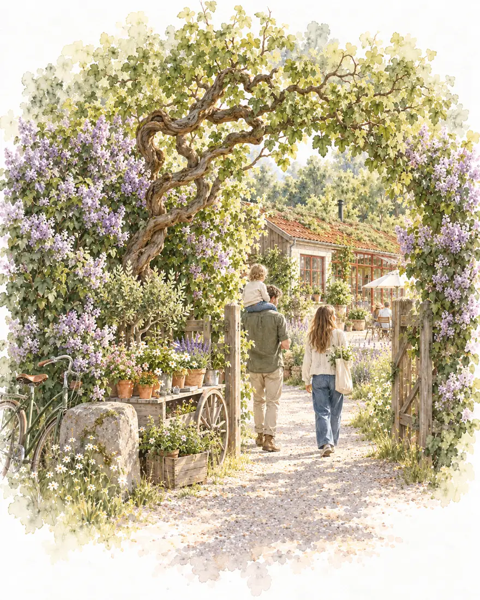
Grunden
Där det började
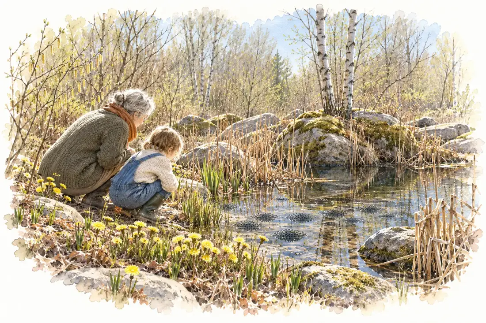
- Torpet och ateljén
- Dammen
- Ängen
- Skogsträdgården
- En första verkstad
Det här finns på plats i dag. Resten av sidan beskriver visionen.
Bok 1 · Grundboken om platsen och initiativet
Solglänta
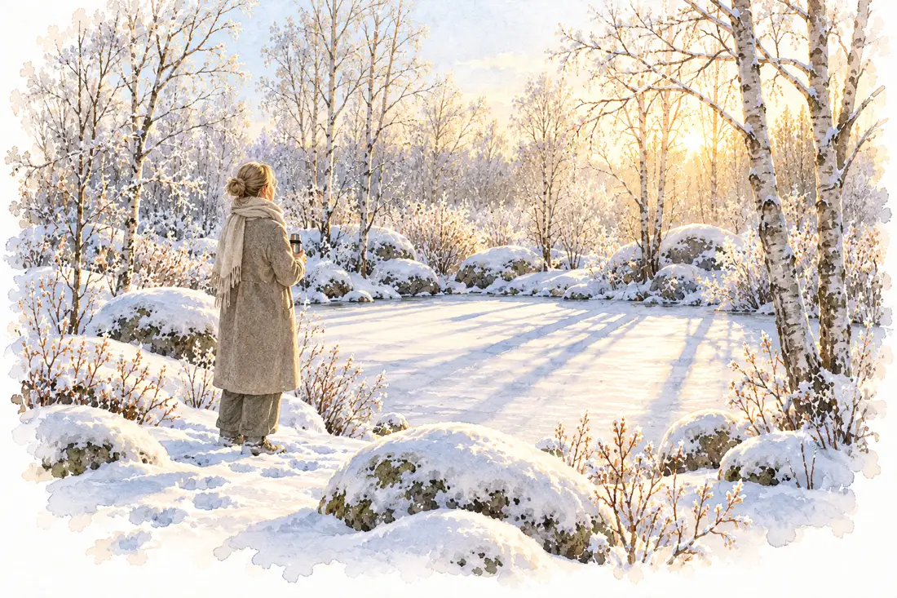
Boken om var vi börjar: en skogsträdgård på cirka 3 700 m² på Vreta Parkväg 8 i Uppsala, och tänkandet bakom den. Den går från platsen via regenerativ design och permakultur till det levande systemet och hur man lever med platsen över tid.
- Fyra delar: Platsen, Tänkandet, Det levande systemet, Att leva med platsen
- Sju teman och åtta pelare, från skogsträdgård och återbruk till Field Lab och tillverkning
- Femton nyckelväxter och sju växtskikt i skogsträdgården
”En fruktträdgård är en samling träd. En skogsträdgård är ett samhälle.”
Bok 2 · Sju verkstäder och en shop
Verkstäderna
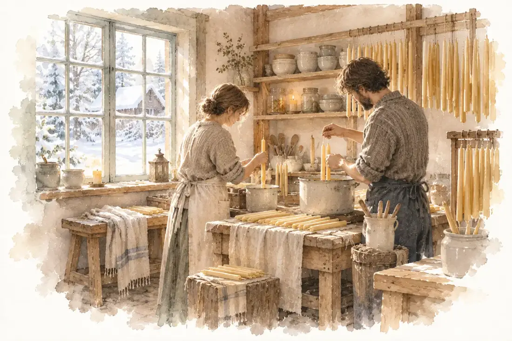
Hantverk, material och återbruk på platsen. Boken går igenom verkstäderna en och en och visar hur fynd från auktioner och en murstock får en ny uppgift.
- Fynden: ekstolpar, lamellglas, syrisk kalksten och tegel som får nytt liv
- Konstnärsstudion, keramik, snickeri, söm och väv, samt smedja, mejeri och bryggeri
- Shopen och ett verkstadsår
”Vi gör inte samma sak hundra gånger. Vi gör hundra saker en gång.”
Bok 3 · Kurser, evenemang, retreats, måltider och värdskap
Mötesplatsen

Platsen som mötesplats: hur Vreta tar emot små grupper, och hur man planerar ett besök. Fyra sätt att mötas bär boken.
- Kurser, evenemang, retreats och gemensamt arbete
- Årets fester: påsk, midsommar, skördefest och mustdag, julmarknad
- Tipin för upp till tjugo vid elden, långbordet och värdskap
”Det som lärs med händerna sitter kvar längre än det som lärs med öronen.”
Bok 4 · Fyra kök, elden, bordet och en kokbok
Köken
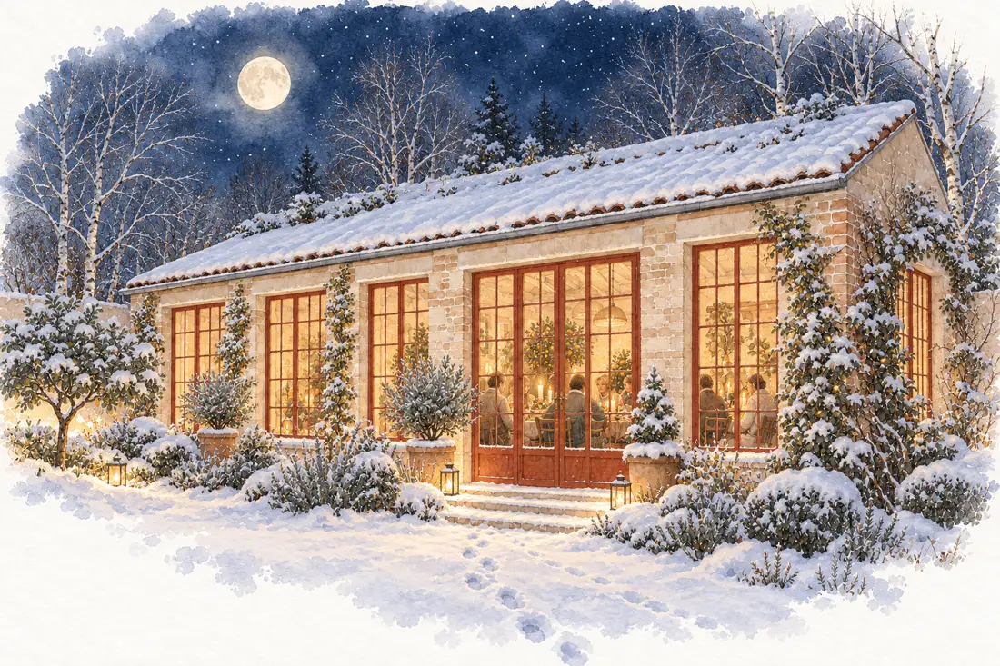
Om hur man lagar mat och äter tillsammans på platsen. Köken har fått sina hem i återbrukade delar, och boken slutar i en kokbok med trettio måltider.
- Torpets kök, Orangeriets kök, Uteköket och Studioköket
- Elden: muurikka, helstekt lamm, gryta i trefot och dutch oven
- Tre delar: Köken och elden, Bordet, Kokbok
”Det finns inga nya kök på Vreta. Det finns bara kök som har fått ett nytt hem.”
Bok 5 · Rum och tipi
Boendet
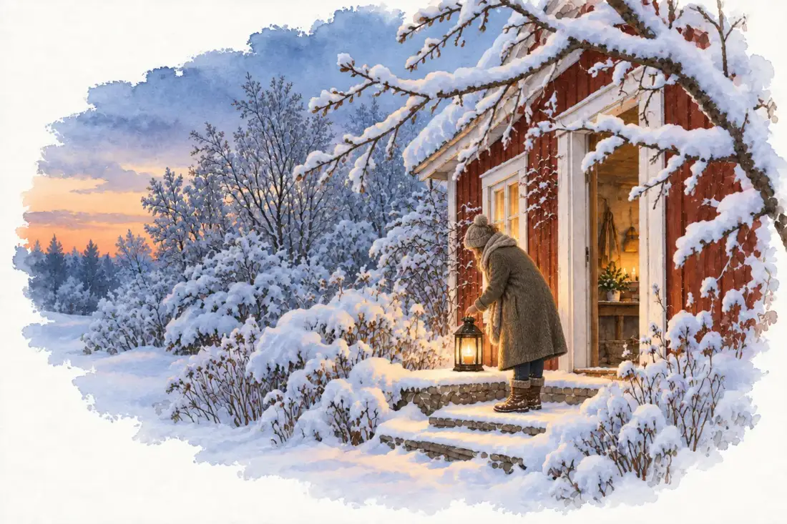
Att bo och sova på platsen: tolv bäddar i rummen, plus tipin runt elden.
- Rummen: Torpet, Ateljén, Trädgårdsstugorna, Verkstadsrummet och Citronrummet i orangeriet
- Tipin runt elden
”Inget rum är det andra likt. Men alla säger samma sak: här har någon brytt sig.”
Bok 6 · Gårdshuset vid infarten
Caféet och Shopen
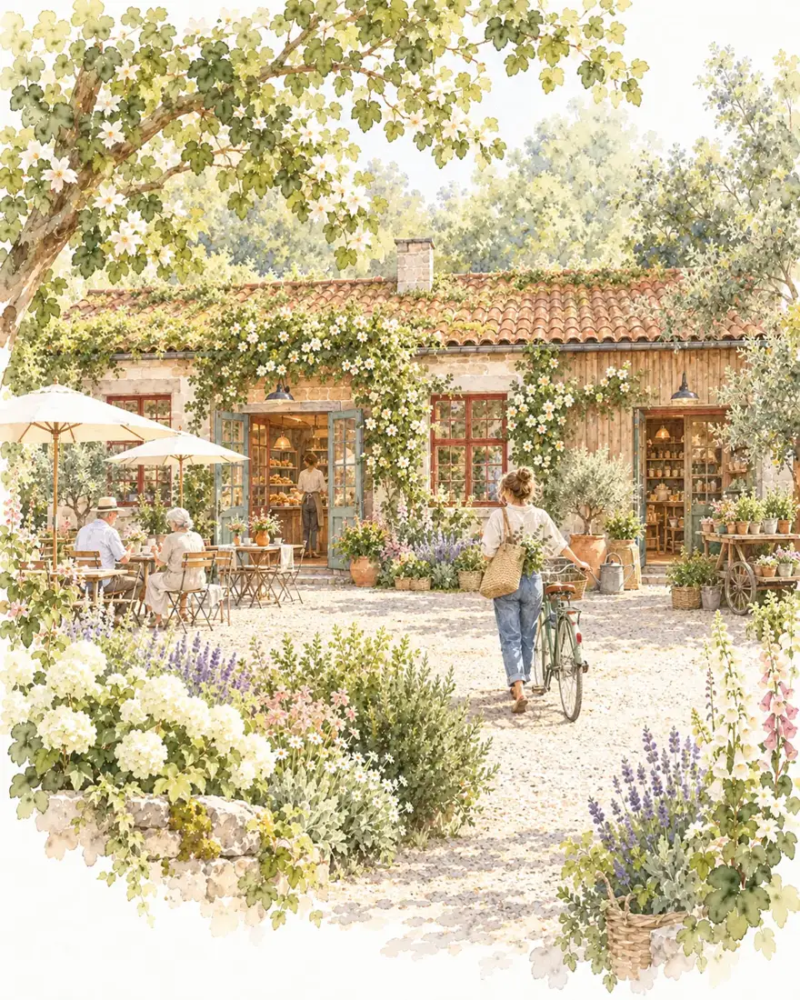
Ett gårdshus vid infarten med café och shop. Ormhasseln från Vallentuna är tröskelträd, och varorna kommer från närområdet.
- Caféet är platsens öppna dörr
- Sju sorters varor: plantor och frön, skafferi, hantverk, antikt och återbruk, konst, planscher, och varor från producenter inom femton mil
”Ett café vid grinden är platsens öppna dörr. Man behöver inte ha ett ärende – det räcker att vara törstig.”
Bok 7 · Mat från en liten plats
Odlingen
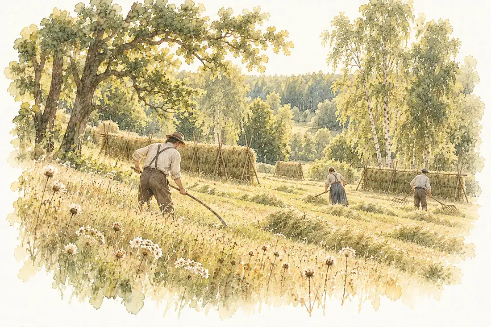
Jorden, lådorna, drivbänkarna, växthusen, orangeriet, friland, bär och frukt. Boken visar hur man odlar mat på en liten tomt med lerjord.
- Sex sätt att odla på samma tomt, från friland till det friväxande
- Lerjord i odlingszon 3 som resurs att lära känna
- Orangeriet, och boken slutar i ett odlingsår
”Vi odlar inte bara mat. Vi odlar jord, kunskap och relationer – och maten är det som syns.”
Bok 8 · Drygt hundra sätt att göra arbetet lättare
Verktygen
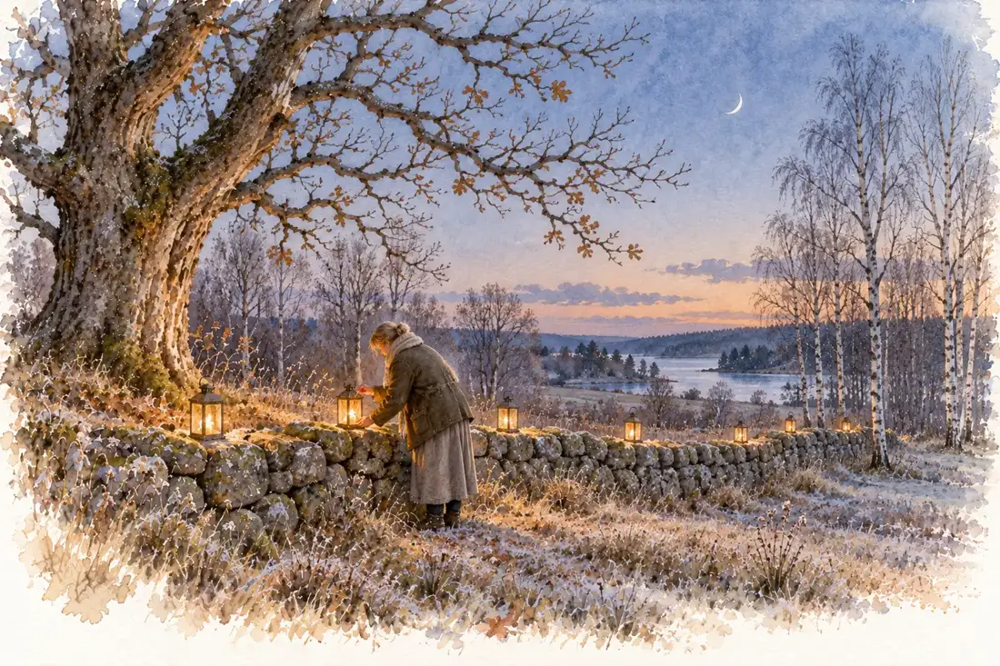
Verktyg, hack och knep på platsen. Varje hack är märkt Lågteknik, Högteknik eller Hybrid.
- Att flytta tungt, bygga med det som finns och vårda redskap
- Vatten, damm, värme, ljus och energi
- Det digitala minnet, förråd och förädling, och att vårda och laga
”Ett verktyg är ett material som har fått en uppgift.”
Bok 9 · Det heliga i det levande
Andligheten
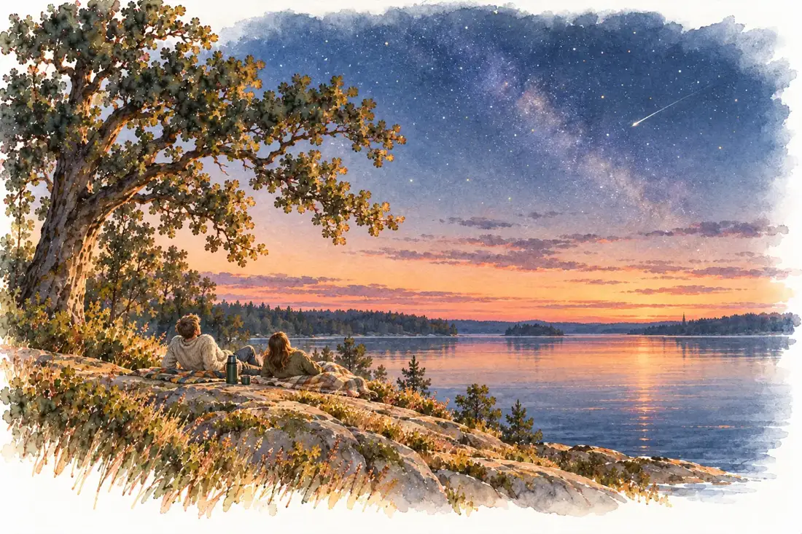
”Inte en plats där människan ska tro på det heliga, utan en plats där hon får öva sig i att behandla livet som heligt.”
En bok i fem delar – Platsen, Tiden, Vägen, Elden och rösten, Livet – om att öva sig i att se livet som helt. Den avviker medvetet från seriestandarden med egna epigrafer och reflektioner.
- Grundsyn: allt levande är heligt, som ett sätt att se och handla och inte som en trosbekännelse
- Månens rytm, mayakalendern, de fyra vindarna och själavandringen till Stillpoint
- Ingen förkunnar och alla traditioner möts med respekt
Bok 10 · Januari 2027 till januari 2028
Kalenderåret
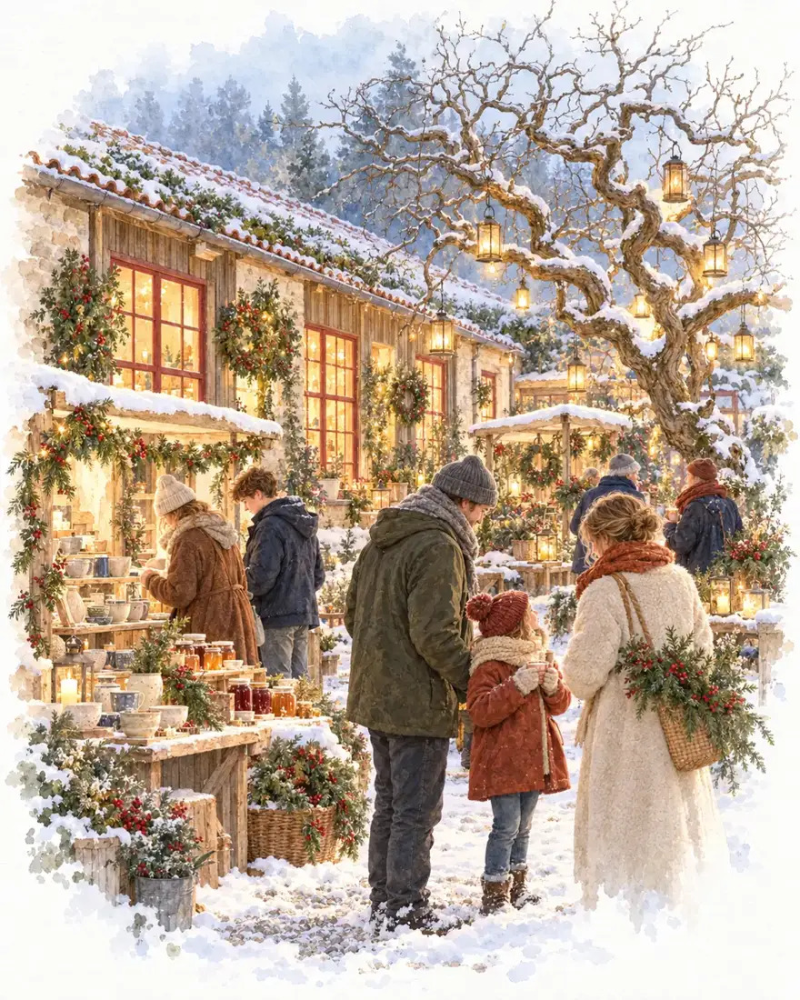
En almanacka för platsen: datum och högtider, månen och himlen, naturen, vattnet och arbetet. Den är skriven för platsen i full verksamhet.
- Tretton månader, från januari 2027 till och med januari 2028
- Fyra klockor: solen, månen, naturen och människorna
”Ett år är inte en rad av dagar. Det är en cirkel – och varje varv lär oss något om platsen och om oss själva.”
Bok 11 · December 2026 till februari 2028
Årets andetag
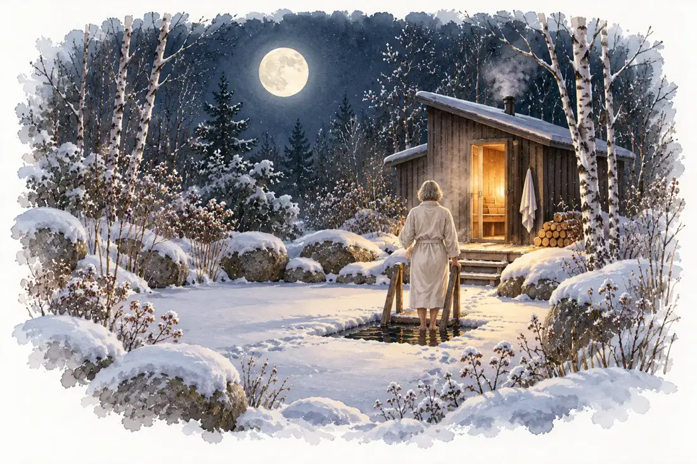
Följeslagare till Andligheten och i takt med Kalenderåret: femton månar i fem delar, med högtider från många traditioner, en övning och en fråga att bära.
- Börjar i mörkret, i december 2026, och slutar med Ljusmånen i februari 2028
- En enkel övning varje månad som går att göra hemma
”Vi tror att det går att tända ett ljus för en annan människas högtid utan att låtsas att den är ens egen, och att det går att sitta still en stund utan att veta vad man tror på.”
More life together.
Kontakta Mattias